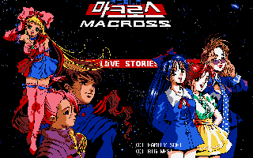
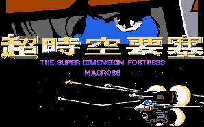

Macross - PC Games
A home-brew game still in the developmental stages. Check out its homepage.

The drawings and music are very sharp. The game is completely in Korean.

![[Veritech: Variable Flight Simulator]](images/pcVeritech.gif) This is a fairly decent looking flight sim. that lets you control a Veritech from
Macross. Since the name Macross is not used anywhere, it is
probably an unofficial game.
This is a fairly decent looking flight sim. that lets you control a Veritech from
Macross. Since the name Macross is not used anywhere, it is
probably an unofficial game.
Anime Video Game Resource Center © 1998 by Luis A. Cruz